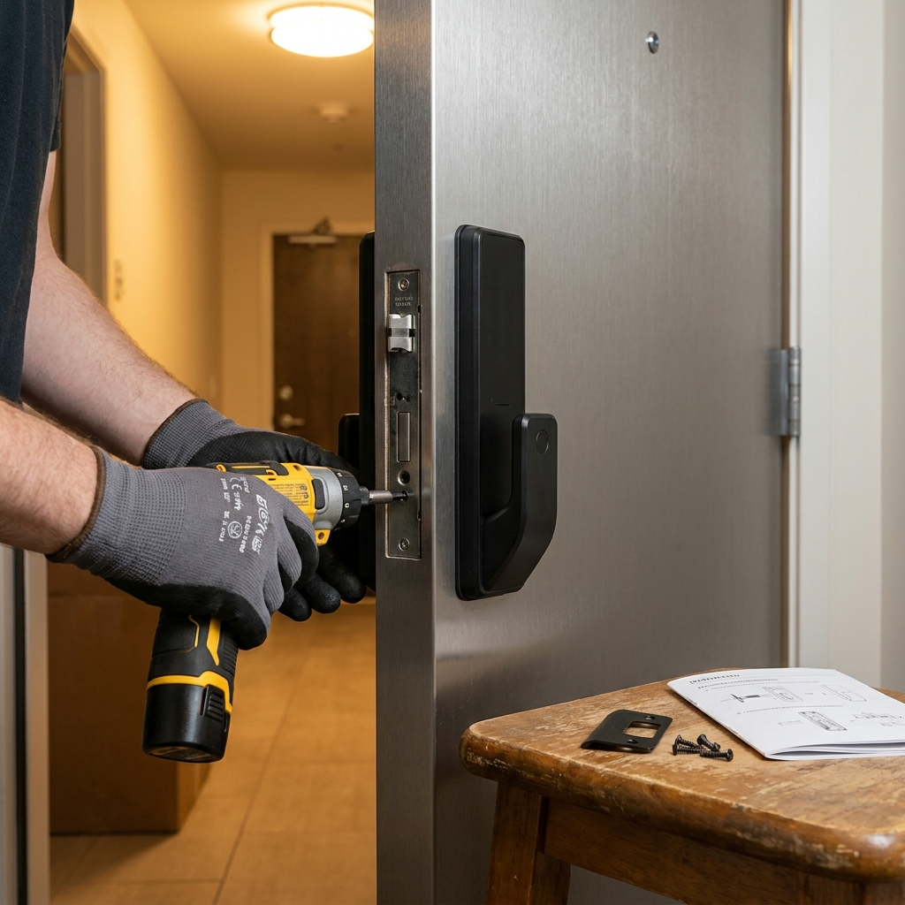
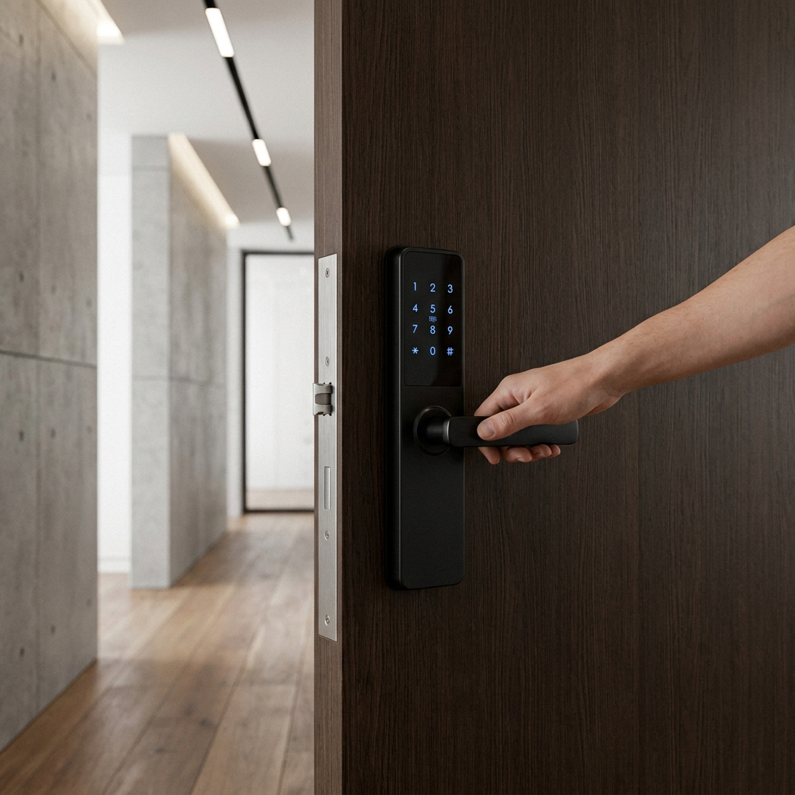

현관 디지털 도어락 교체 비용과 셀프 설치 방법 — 무타공 주키 규격 체크리스트 vs 출장 설치비 비교
노후된 현관문 디지털 도어락이 방전되거나 잠금 오작동을 일으킬 때, 기존 손잡이 구멍을 그대로 활용하는 '무타공 주키(핸들 일체형)' 모델을 선택하면 방화문 타공 없이 십자드라이버 하나만으로 누구나 30분 만에 셀프 교체가 가능합니다.
비용 면에서 셀프 교체 시 온라인 자재비(6만~15만 원)만 소요되는 반면, 동네 열쇠점이나 출장 전문 기사를 부르면 제품가 외에 기본 출장 설치 공임비 5만~8만 원(타공 필요 시 추가 2만~3만 원)이 추가되어 총 15만~30만 원 상당이 청구됩니다.
특히 전월세 임차인은 이사 갈 때 원상복구 의무가 있으므로 문에 구멍을 뚫지 않는 '무타공' 제품인지, 그리고 방화문 두께(40~50mm)와 모티스 규격이 호환되는지 사전에 확인해야 실패 없는 교체가 가능합니다.

아파트 현관문에 전동 드라이버로 새 디지털 도어락을 조립하는 셀프 설치 작업 / AI 제작 이미지
01 | 노후 도어락 방전·오작동: 교체해야 할 때 고려할 핵심 선택지
어느 날 갑자기 도어락 비밀번호를 눌러도 모터 헛도는 소리만 나며 문이 열리지 않거나, 건전지를 새로 갈아 끼웠는데도 며칠 만에 방전 경고음이 울린다면 도어락 수명이 다한 것입니다.
디지털 도어락의 권장 내구 연한은 약 7~10년 안팎으로, 내부 솔레노이드 모터 부품과 메인보드 센서가 노후화되면 보안과 안전에 직결되는 치명적인 결함이 발생합니다.
도어락 교체를 결심했다면 가장 먼저 "셀프로 직접 달 것인가, 기사를 부를 것인가", 그리고 "문에 구멍을 뚫는 일반 주키인가, 구멍을 뚫지 않는 무타공 주키인가"를 결정해야 합니다.
02 | 도어락 종류 완전 정복: 보조키형 vs 무타공 주키 vs 푸시풀 도어락
시중에 판매되는 현관 도어락은 형태와 잠금 구조에 따라 크게 세 가지로 분류됩니다.
| 도어락 형태 |
외형 및 구조적 특징 |
장점 및 단점 |
타공 필요 여부 |
| 보조키형 |
현관 손잡이 위쪽에 별도로 설치하는 작은 사각 박스형 |
가격이 가장 저렴하지만 손잡이와 도어락이 분리되어 사용이 번거로움 |
상단 32mm 추가 타공 필수 |
| 무타공 주키 (핸들형) |
현관문 기본 손잡이를 떼어낸 구멍에 1:1로 장착하는 일체형 |
문에 흠집이나 구멍을 내지 않아 자가 설치 최적, 임차인 선호도 1위 |
타공 일절 없음 (0개) |
| 푸시풀(Push-Pull) 주키 |
밀고 당기는 최신형 고급형 바(Bar) 타입 도어락 |
양손에 짐을 들었을 때 몸으로 밀고 나가기 매우 편리, 디자인 우수 |
대부분 상단 추가 타공 필요 (일부 무타공 푸시풀도 출시) |
03 | 전월세 임차인을 위한 필수 조건: 타공 없는 '무타공 주키'의 원리
아파트나 빌라에 전세 또는 월세로 거주하고 있다면 무조건 '무타공 주키'를 선택해야 합니다.
기존 아파트 방화문에는 건설 당시 설치된 기본 현관 레버 손잡이(지름 32~54mm 원형 홀)와 측면 래치 볼트 홀이 뚫려 있습니다.
'무타공 주키'는 별도의 드릴링 없이 기존에 이미 뚫려 있는 손잡이 홀 하나만을 이용해 내부와 외부 몸체를 강력한 철제 브래킷으로 맞물려 고정하도록 정밀 설계되었습니다.
따라서 이사 갈 때 새 도어락을 떼어내 챙겨가고 원래 있던 기본 손잡이를 다시 조립해 놓으면 흔적이 전혀 남지 않아 집주인과의 원상복구 분쟁을 100% 원천 차단할 수 있습니다.
04 | 셀프 DIY 자재비 vs 열쇠 설비 출장 기사 시공 비용 비교표
인터넷에서 도어락 부품만 구매해 직접 설치할 때와 전문 열쇠 기사를 불렀을 때의 실제 비용 차이입니다. (기준: 2026년 철물·설비 시장 평균가)
| 비용 항목 |
셀프 설치 (DIY) |
열쇠 전문점·출장 기사 호출 |
비용 차이 및 비고 |
| 도어락 본체 자재비 |
6만 ~ 14만 원 (온라인 최저가) |
12만 ~ 22만 원 (오프라인 매장 마진) |
동일 모델 기준 온라인이 40% 저렴 |
| 기본 출장 설치비 |
0원 (본인 노동력 30분) |
5만 ~ 8만 원 |
수도권 기준 평일 주간 공임비 |
| 철판 추가 타공비 |
0원 (무타공 모델 기준) |
2만 ~ 3만 원 (홀쏘 타공 시) |
타공 필요 시 추가금 발생 |
| 보강판(플레이트) 비용 |
5천 ~ 1만 원 |
1만 5천 ~ 3만 원 |
기존 타공 흔적 가림용 철판 |
| 총 지출 예상 비용 |
총 7만 ~ 15만 원 |
총 18만 ~ 32만 원 |
셀프 시 최소 11만~17만 원 절약! |
보시는 바와 같이 직접 설치하면 최소 10만 원 이상의 공임비를 아낄 수 있으며, 작업 난이도 역시 조립 설명서와 유튜브 영상을 보면 초보자도 30~40분이면 충분히 완료할 수 있는 수준입니다.

새롭게 교체 설치된 세련된 푸시풀 디지털 도어락과 깔끔한 현관문 마감 / AI 제작 이미지
05 | 설치 전 자가진단: 방화문 두께(mm)와 백셋(Backset) 규격 측정법
도어락을 인터넷으로 결제하기 전, 줄자를 들고 현관문에 서서 딱 3가지를 반드시 실측해야 반품 배송비 낭비를 막을 수 있습니다.
📏 도어락 호환 규격 3대 자가진단
1. 문 두께 측정 (Door Thickness): 문을 열고 문 옆면(철판 두께)을 잽니다. 표준 아파트 방화문은 40mm ~ 50mm입니다. 만약 제니스 방화문처럼 문 테두리에 고무 패킹 턱이 있는 특수문(60mm 이상)이라면 샤프트(사각 축) 연장 부속을 추가 구매해야 합니다.
2. 백셋 규격 확인 (Backset): 문 끝 모서리부터 손잡이 열쇠 구멍 중심까지의 거리입니다. 국내 표준 규격은 70mm입니다. 수입문이나 옛날 빌라는 가끔 60mm인 경우가 있으니 확인하세요.
3. 기존 타공 구멍 노출 여부: 기존에 보조키가 달려 있던 집이라면 새 도어락 손잡이를 달았을 때 위쪽 옛날 구멍이 흉하게 노출될 수 있습니다. 이 경우 '도어락 전용 보강판(마감 플레이트)'을 함께 주문해야 합니다.
06 | 공구 준비와 기존 도어락 안전한 분해 순서 (모티스 해체 팁)
작업에 필요한 공구는 십자드라이버(가능하면 전동 드라이버 권장) 하나면 90% 끝납니다.
🔧 기존 도어락 해체 4단계 순서
• 1단계: 실내 측 건전지 커버를 열고 배터리를 모두 뺍니다.
• 2단계: 실내 본체 상단과 하단에 고정된 긴 볼트 2~4개를 드라이버로 풀어 내부 본체를 떼어냅니다. (이때 외부 본체와 연결된 전원 케이블 커넥터를 조심스럽게 분리합니다.)
• 3단계: 문 철판에 고정된 내부 고정 브래킷 철판 볼트를 풀고, 문 바깥쪽 외부 본체를 뺍니다.
• 4단계: 문 측면(문틀과 맞닿는 곳)의 모티스(잠금 쇠뭉치) 상하 나사 2개를 풀고 모티스를 밖으로 쑥 빼냅니다.
⚠️ 반드시 문을 열어둔 상태로 작업하세요!: 도어락 교체 작업 중 문이 덜컥 닫히면 안에 갇히거나 밖에서 열지 못하는 비상사태가 발생합니다. 문 아래에 문스토퍼(도어스토퍼)나 무거운 물건을 괴어 문이 100% 열린 상태를 유지하며 작업해야 합니다.
07 | 무타공 주키 도어락 셀프 교체 단계별 6단계 설치 가이드
새 제품 박스를 개봉했다면 설명서 순서에 따라 침착하게 조립을 진행합니다.
🛠️ 6단계 셀프 장착 완벽 매뉴얼
• 1단계: 새 모티스 삽입 — 문 측면에 모티스 뭉치를 밀어 넣고 나사 2개로 단단히 고정합니다. (이때 모티스에 달린 전원 케이블을 실내 쪽 구멍으로 뺍니다.)
• 2단계: 핸들 방향 설정 — 문이 열리는 방향(좌수문/우수문)에 맞춰 손잡이 레버 방향을 돌려 고정합니다.
• 3단계: 사각 핸들 샤프트 체결 — 외부에서 내부로 사각 철심(핸들 샤프트)을 꽂고 빠지지 않도록 안전 핀(분할 핀)을 꽂습니다.
• 4단계: 외부 본체 결합 — 케이블을 모티스 위쪽 홀로 통과시키며 외부 본체를 문에 밀착시킵니다.
• 5단계: 실내 브래킷 및 내부 본체 조립 — 내부 철제 브래킷을 대고 볼트로 외부 본체와 단단히 맞물린 뒤, 케이블 커넥터를 메인보드에 딸깍 소리가 나도록 꽂고 실내 본체를 나사로 조입니다.
• 6단계: 건전지 삽입 및 최종 테스트 — 배터리를 넣고 반드시 문을 열어둔 채로 수동 잠금 노브와 비밀번호 입력 테스트를 3회 이상 반복합니다.
08 | 건전지 누액 방지법과 9V 비상 배터리로 방전 시 문 여는 법
도어락 고장의 60% 이상은 저가 알카라인 건전지에서 흘러나온 '화학 누액(백색 가루)'이 메인보드 회로를 부식시키기 때문에 발생합니다.
• 건전지 관리법: 다이소나 저가 건전지 대신 브랜드 정품 알카라인 배터리(에너자이저, 듀라셀 등)를 사용하시고, 1년에 한 번 정기적으로 일괄 교체하는 것이 기기 수명을 10년 이상 유지하는 비결입니다.
• 완전 방전 시 대처법: 건전지가 완전히 방전되어 키패드에 불이 전혀 들어오지 않는다면 당황하지 마세요. 가까운 편의점에서 '네모난 9V(볼트) 사각 건전지'(약 3~4천 원)를 하나 구매하세요. 도어락 외부 하단이나 번호판 아래에 있는 2개의 금속 비상 전원 단자에 9V 배터리를 꾹 누르고 있는 상태에서 비밀번호를 누르면 문이 즉시 열립니다.
09 | 디지털 도어락 교체 후 안전 점검 체크리스트 & FAQ
설치를 마친 뒤 가족들의 안전을 위해 즉시 점검해야 할 항목들입니다.
📋 설치 직후 필수 점검 체크리스트
[ ] 문을 열어둔 상태에서 잠금 장치(데드볼트) 정상 돌출 여부 확인
[ ] 초기 비밀번호(보통 1234)를 즉시 가족 고유 비밀번호로 변경
[ ] 허수 기능(임의의 번호를 마구 누르고 뒤에 진짜 비번 입력) 활성화
[ ] 자동 잠금 시간 설정 (문 닫힌 후 2초 뒤 자동 잠김 권장)
[ ] 내부 이중 잠금(안심이 기능) 버튼 작동 확인
❓ 자주 묻는 질문 FAQ
Q1. 셀프로 교체하다가 문이 고장 나면 어쩌죠?
A1. 무타공 모델은 기존 규격 구멍을 그대로 쓰므로 문 자체가 파손될 일은 없습니다. 혹시 중간에 조립이 막히더라도 기존 부속을 다시 역순으로 달아놓거나 출장 기사를 호출하시면 되므로 부담 없이 도전해 보셔도 좋습니다.
Q2. 카드키(RFID 태그)는 몇 개까지 등록되나요?
A2. 대부분의 디지털 도어락은 기본 카드키 2~4개를 제공하며, 최대 20~50개까지 추가 등록이 가능합니다. 스마트폰의 교통카드 NFC 기능도 일부 모델에서 등록하여 키 대신 쓸 수 있습니다.
#디지털도어락교체
#도어락셀프설치
#무타공도어락
#도어락교체비용
#현관도어락설치비
#도어락방전9V
#도어락모티스교체
#전세원상복구
#푸시풀도어락
#집수리셀프DIY